Sprint 3: HTML, CSS, and JavaScript
An analogy of HTML and CSS could be that HTML is like a person before they are dressed, and CSS is like the clothing, or the overall 'style' the person has.
What is the DOM?
If you go into developer tools in Chrome you can view the DOM (Document Object Model). The DOM allows for developers to examine code.Everything that makes up the DOM is refered to as ‘nodes’. Nodes can be elements, attributes, text content, comments etc. In JS you can search for nodes these ways in the Console:
- document.getElementsByClassName(“content”); (note “content” is just an example).
- You can also get elements by tag name eg h2 tags.
What are control flow and loops?
Control flow is the order in which code is run, unless there is a change to the flow by something like loops.
There are three kinds of loops:
- For loops - this is where you set the looping conditions to loop through a block of code a number of times. It can replace a while or a do-while loop.
- While loops - this loop runs until its condition is met. The condition is evaluated before the execution of the loop.
- Do-while loops are similar to while loops, however with the do-while loop the condition is evaluated after the execution of loop’s body.
The difference between accessing data from arrays and objects.
Arrays are collections of things, such as a list of what you're going to buy from the supermarket. Arrays store multiple values in a single variable eg:
- var shopping = ["bread", "cheese", "tomatoes"];
You can access arrays elements by using a numbers example:
- array [0] - this would return "bread"
- array [1] - this would return "cheese"
- array [2] - this would return "tomatoes".
Objects are also a collection of things. Objects are variables. JS variables can contain single values.
The values are written as name : value pairs (name and value separated by a colon) example:
- var person = {firstName: "RuPaul", lastName: "Charles",age: "58"};
What are functions and why they are useful?
A function is a JS procedure. The functions peform tasks. If you have code that needs to be used multiple times you can create a function to avoid having to repeat code. You can create a function in JS by using the word function, followed by the name of the function.
Sprint 2: Margin, Border, and Padding

Padding
Padding and margins behave in a similar way, which often confuses people. The best way to understand the difference between padding and margins is that margins create invisable space around the box while padding creates space that includes the background colour. Obviously you would need to have background colour in order to see what the padding is doing in your browser.I started my experiment by creating two boxes of equal size.
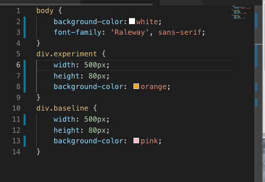
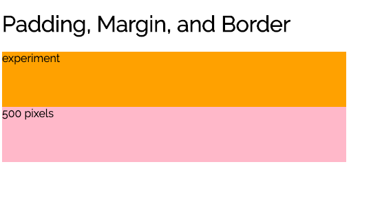
I then added padding.
 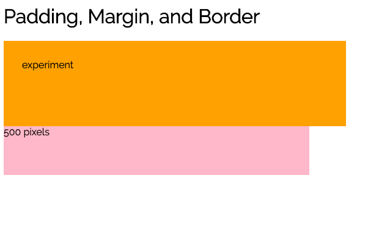
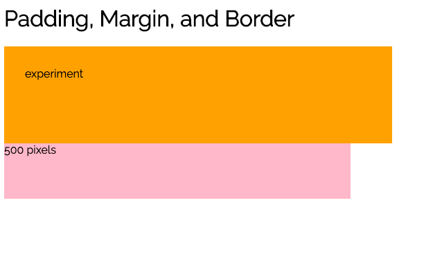
Borders
Borders in CSS are similar to borders in MS Office in that they create a visable line/border around a box. You can also add borders to only one, two, or three sides of the box. You can also change the thickness of the borders. There are three different border properties in CSS:
- border-width
- border-color
- border-style
I then added a solid border.
 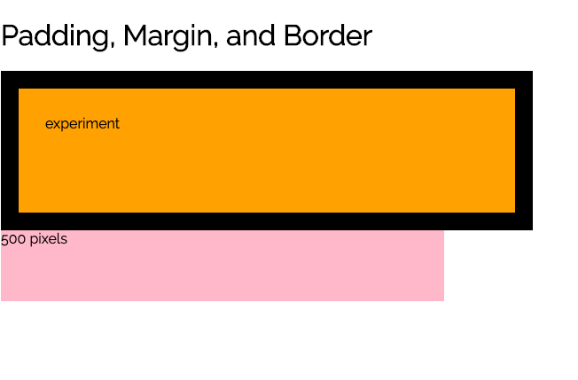
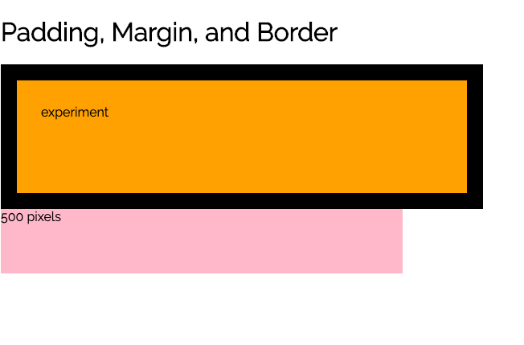
Margins
Margins create invisable space around a box that nothing else can go in. They create this space without background colour. Margins push away empty space from the box. I added a bottom-margin to my box
 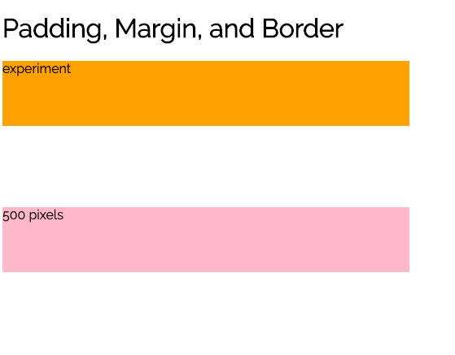
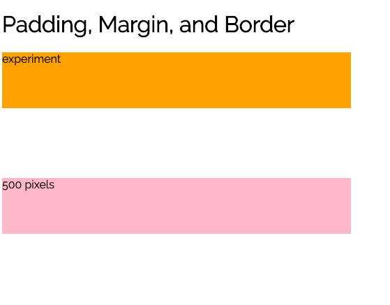
It's important to note that you need to add up the width, margin, border, and padding space to know the total space that the box is taking up on the webpage. If you want to add an additional box to the right or left of your box then you may not have enough space, and this will push the second box below the first box.
Padding
Padding and margins behave in a similar way, which often confuses people. The best way to understand the difference between padding and margins is that margins create invisable space around the box while padding creates space that includes the background colour. Obviously you would need to have background colour in order to see what the padding is doing in your browser.I started my experiment by creating two boxes of equal size.
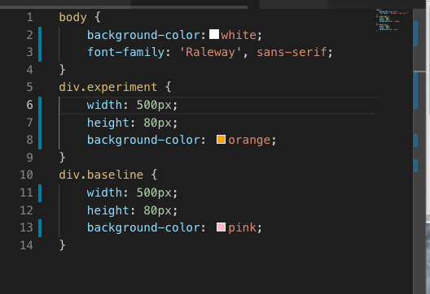 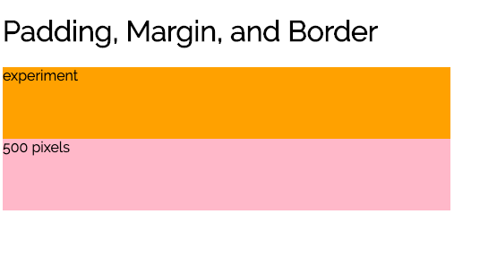I then added padding.
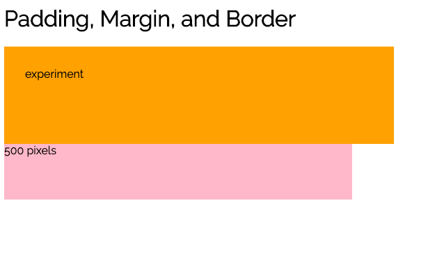
Borders
Borders in CSS are similar to borders in MS Office in that they create a visable line/border around a box. You can also add borders to only one, two, or three sides of the box. You can also change the thickness of the borders. There are three different border properties in CSS:
- border-width
- border-color
- border-style
I then added a solid border.
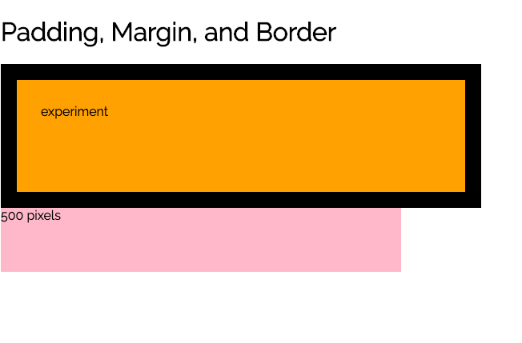
Margins
Margins create invisable space around a box that nothing else can go in. They create this space without background colour. Margins push away empty space from the box. I added a bottom-margin to my box
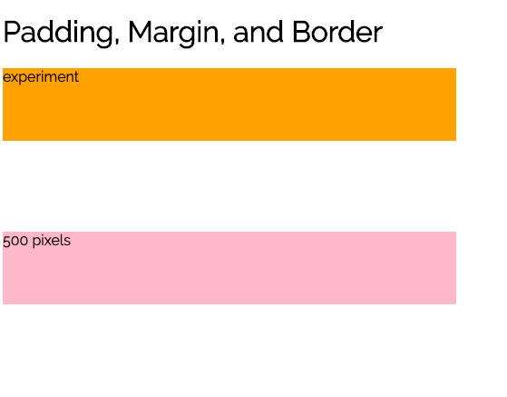
It's important to note that you need to add up the width, margin, border, and padding space to know the total space that the box is taking up on the webpage. If you want to add an additional box to the right or left of your box then you may not have enough space, and this will push the second box below the first box.